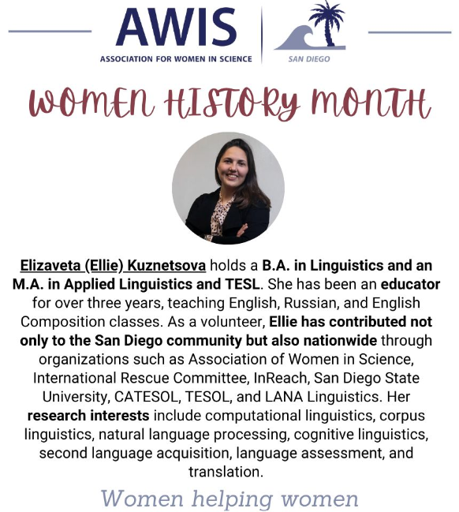
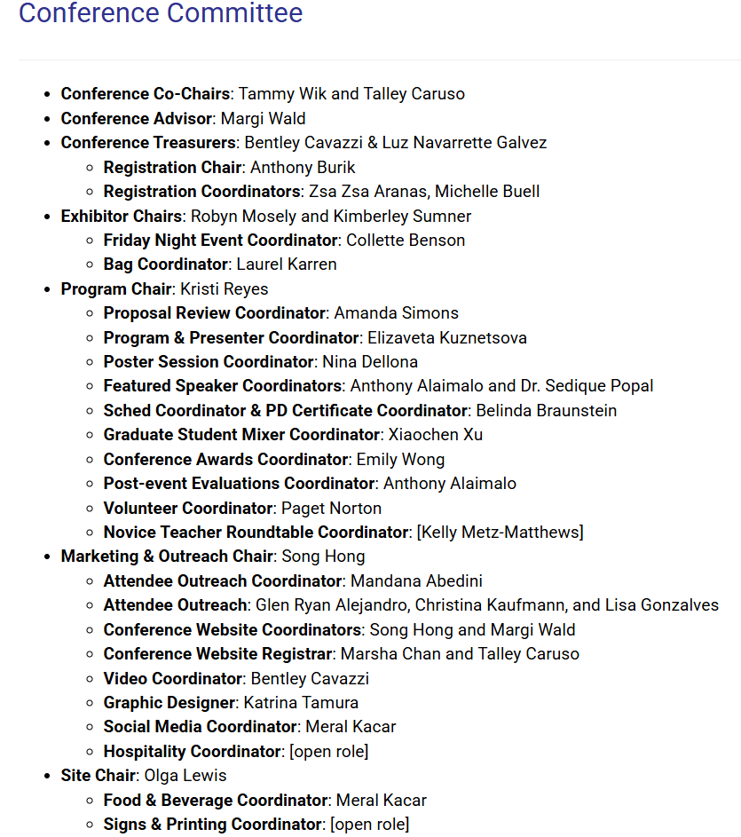
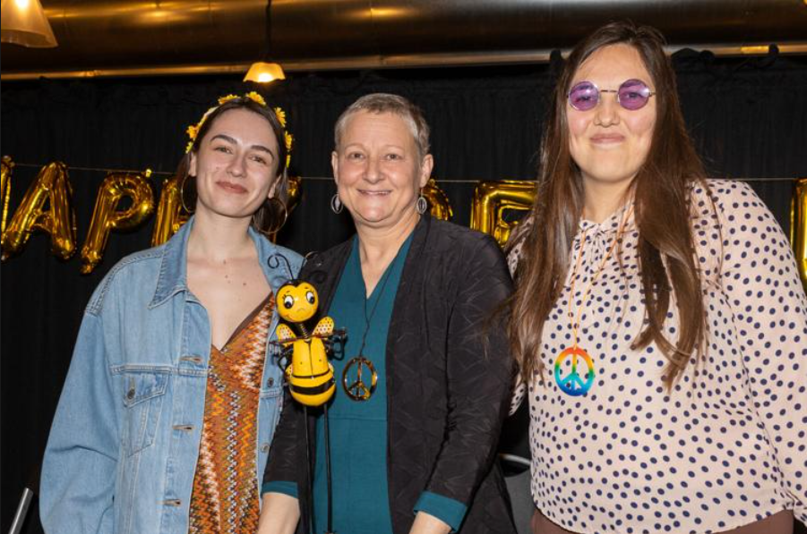
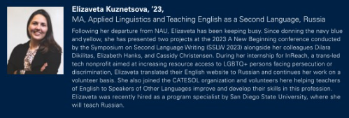
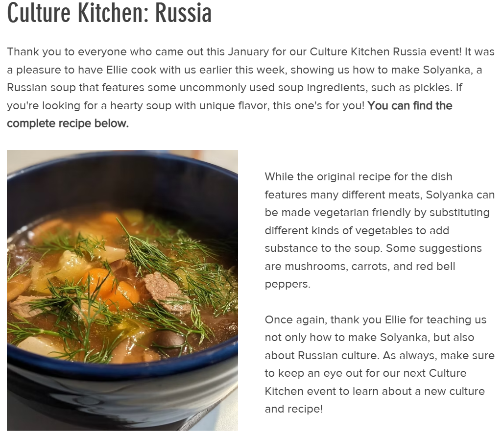

Media & Mentions
2025

AWISSD × UCSD Extension Scholarship Winners
Recognition post celebrating Elizaveta (Ellie) Kuznetsova and Lisa Janssen as scholarship winners.

Conference Committee Appreciation
Recognition from CATESOL for conference committee contributions.
2024

Literacy Center hosts 27th annual Adult Mountain Spelling Bee at CCC
Coverage in the Arizona Daily Sun on the annual Mountain Spelling Bee hosted by the Literacy Center.

Class Notes: Elizaveta Kuznetsova
Featured in the NAU CIE Alumni Newsletter highlighting professional updates and accomplishments.
San Diego Chapter Officers 2024–2025
Listed among the officers of the CATESOL San Diego Chapter.

Conference Committee Appreciation
Recognition from CATESOL for conference committee contributions.
CATESOL Board of Directors 2023–2024
Listed on the CATESOL Board of Directors page.
Proposal and Manuscript Reviewers
Listed among proposal and manuscript reviewers for Applied Linguistics Press.

LANA Corpus Milestone Announcement
LANA Linguistics celebrates surpassing 1,000 hours of conversation data collected across the U.S.
27th Annual Mountain Spelling Bee Bash
Featured in The Literacy Center’s announcement for the annual Mountain Spelling Bee Bash.
Congratulations to This Year’s Spelling Bee Winners
The Literacy Center shares results from the annual spelling bee and thanks sponsors and participants.
2023
CATESOL Member Focus – CIRT-IG Member, Elizaveta Kuznetsova
Feature in the CATESOL Newsletter highlighting involvement with the CIRT-IG community.
Share Your Voice Collaborators
Listed among collaborators on the Share Your Voice project team page.

Capturing language, one conversation at a time
Feature in The NAU Review on the LANA corpus and the broader goals of the project.

Culture Kitchen: Russia
Feature connected to Culture Kitchen: Russia.
26th Annual Mountain Spelling Bee Bash
Featured in The Literacy Center’s coverage of the annual Mountain Spelling Bee Bash.